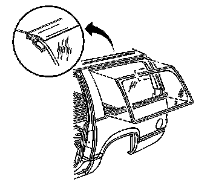

Urethane Adhesive Installation of Stationary Windows (Quarter Window)
URETHANE ADHESIVE INSTALLATION OF STATIONARY WINDOWS (QUARTER WINDOW)
1. CAUTION: Refer to Glass and Sheet Metal Handling Caution.
IMPORTANT: Remove all but approximately 2 mm (3/64 in) of the existing bead of urethane adhesive from the pinch-weld flange.
Remove all mounds or loose pieces of urethane adhesive from the pinch-weld area.
2. If the original window is being reused, remove all but a thin film of the existing urethane adhesive from the window surface by using a clean utility knife or razor blade scraper.
3. Inspect the following components for the causes of a broken window:
- The flange of the window opening
- The window reveal molding
4. Inspect for any of the following problems in order to help prevent future breakage of the window:
- High weld
- Solder spots on the pinchweld
- Hardened sealer
- Any other obstruction or irregularity in the pinch-weld flange
5. IMPORTANT: If corrosion of the pinch-weld flange is present or if sheet metal repairs or replacements are required, the pinch-weld flange must be refinished in order to restore the bonding area strength. If paint repairs are required, mask the flange bonding area prior to applying the color coat in order to provide a clean primer only surface. Materials such as BASF DE15(R), DuPont 2610(R), Sherwin-Williams PSE 4600 and NP70(R) and Martin-Semour 5120 and 5130(R) PPG DP90LF SPIES/ HECKER 3688/8590 - 3688/5150 - 4070/5090 STANDOX 11158/13320 - 14653/14980 products are approved for this application.
After repairing the opening as indicated, perform the following steps:
1. Remove all traces of broken glass from the outer cowl panel, seats, floor and defroster ducts.
2. Clean around the edge of the inside surface of the window with a 50/50 mixture of isopropyl alcohol and water by volume on a dampened lint free cloth.
6. Verify all primers and urethane adhesive are within expiration dates.
CAUTION: Refer to Window Retention Caution.
7. Shake the pinch-weld primer black #3 for at least 1 minute.
CAUTION: Failure to prep the area prior to the application of primer may cause insufficient bonding of urethane adhesive. Insufficient bonding of urethane adhesive may allow unrestrained occupants to be ejected from the vehicle resulting in personal injury.
IMPORTANT: Do not apply the black #3 primer to the existing bead (1) of the urethane adhesive on the pinch-weld flange. Apply the primer only to nicks, scratches or the primed surfaces.
8. Use a new dauber in order to apply the primer to the surface of the pinch-weld flange (1).
9. Allow the pinch-weld primer to dry for approximately 10 minutes.

10. With the aid of an assistant, dry fit the window to the opening in order to determine the correct position.
11. Use masking tape in order to mark the locations (1) of the window (2) in the opening.
12. Cut the masking tape in the center and remove the window from the opening.
13. Use a new dauber in order to apply glass prep clear #1 to the area approximately 10-16 mm (3/8-5/8 in) around the entire perimeter of the window inner surface. Immediately wipe the glass primed area using a clean, lint-free cloth.
IMPORTANT: Use care when applying glass prep clear #1 on the window. This primer dries almost instantly, and may stain the viewing area of the window if not applied evenly.

14. Apply a second coat of the glass prep clear #1 to the same area of the glass.
15. Shake the glass primer black #2 for at least 1 minute.
IMPORTANT: The glass primer black #2 is effective up to 8 hours after applying it to the glass. The primed surface of the glass must be kept clean.
16. Use a new dauber in order to apply the glass primer black #2 to the same areas (2) that glass prep clear #1 was applied.
17. Allow the glass primer to dry for approximately 10 minutes.
18. Cut the applicator nozzle in order to provide a bead of 8 mm (0.316 in) wide and 12.7 mm (1/2 in) high.
19. Use a cartridge-type caulking gun in order to apply a smooth, continuous bead of urethane adhesive.
20. Align the masking tape (1) lines on the window (2) and the body.
21. Press the window firmly into place.
22. Tape the window to the body in order to minimize movement until the urethane adhesive cures.
23. Clean any excess urethane adhesive from the body.
24. Use a soft spray of warm water in order to immediately water test the window.
IMPORTANT: Do not direct a hard stream of high pressure water to the freshly applied urethane adhesive.
25. Inspect the window for leaks.
26. If any leaks are found, use a plastic paddle in order to apply extra urethane adhesive at the leak point.
27. Retest the window for leaks.
28. Do NOT physically disturb the repair area until after these minimum times have elapsed.
CAUTION: Insufficient curing of urethane adhesive may allow unrestrained occupants to be ejected from the vehicle resulting in personal injury.
- For the moisture-curing type of urethane adhesive, allow a minimum of 6 hours at 21°C (70°F) or greater and with at least 30 percent relative humidity. Allow at least 24 hours for the complete curing of the urethane adhesive.
- For the chemical-curing type of urethane adhesive, allow a minimum of 1 hour.
Maintain the following conditions in order to properly cure the urethane adhesive:
- Partially lower a door window in order to prevent pressure buildups when closing doors before the urethane adhesive cures.
- Do not drive the vehicle until the urethane adhesive is cured. Refer to the above curing times.
- Do not use compressed air in order to dry the urethane adhesive.
29. Complete the window installation.